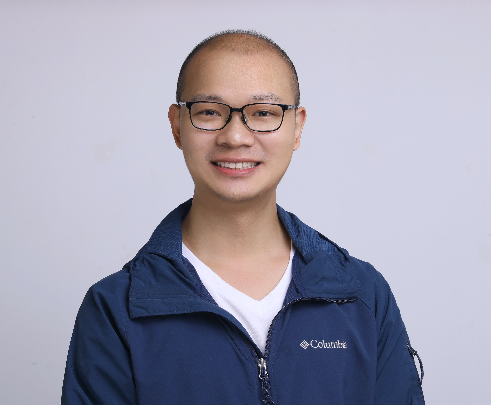

|
Lu Yu
Algorithm Expert
|

Home | Publications | Service |


I am now an algorighm expert in the Machine Intelligence Group at the Ant Group. I received my Ph.D. at KAUST. Before that, I was a Ph.D. student in computer science at King Abdullah University of Science and Technology (KAUST) from Jan. 2016 to Dec. 2020. I was a member of the Machine Intelligence and kNowledge Engineering (MINE) Lab in the Computational Bioscience Research Center (CBRC), advised by Prof. Xiangliang Zhang.
My research interests broadly lie in data mining and machine learning, in particular logic programming, neuro-symbolic AI, complex reasoning, graph representation learning, recommendation system, etc.
- Aug 2023: One paper is accepted by CIKM 2023!
- Jan 2023: One paper is accepted by The WebConf 2023!
- Conference Program Committee (PC): ICLR 2024, WWW 2024, NeurIPS 2023, KDD 2023, ICML 2023, ICLR 2023
- Reviewer: TKDD, Information Sciences, TKDE
Last update: 27 Aug, 2023. Webpage template borrows from Stephen Bach.